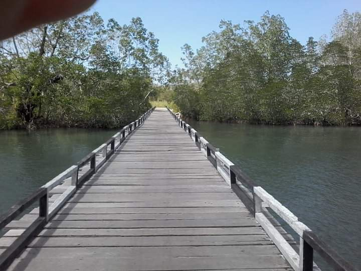

Misteri di Balik Keindahan Telaga Kabau Maluku Utara
ditulis oleh Erni Kedafota. pada 26 Oktober 2023.
Telaga Kabau di Malut menyimpan misteri.
Diantaranya satu telaga tak jauh dari tempat ini yang disebut
"Tahaga Taufon" dan hanya bisa dilihat orang tertentu,
serta ritual "Sas Tahaga".
Telaga Kabau adalah sebuah telaga yang berada diantara dua desa di Kabupaten Kepulauan Sula, Provinsi Maluku Utara. Yaitu Desa Kabau Darat dan Desa Kabau Laut. Untuk itu, ditempat tersebut juga hadir sebuah jembatan yang menghubungkan kedua desa tersebut yang dinamakan "Jembatan Jodoh".
Destinasi Telaga Kabau menawarkan pesona hutan mangrove. Dengan latar belakang hamparan hijau hutan mangrove, kamu bisa mendapatkan spot Instagramable dari atas jembatan penyeberangan yang terbuat dari kayu. Tempat indah ini sudah tentu sering dilalui warga Desa Kabau Darat dan Kabau Laut. Namun, hingga saat ini belum banyak wisawatan dari daerah lain yang berkunjung untuk melihat pesona Telaga Kabau.
Salah satu kendala, adalah lokasinya yang masih sulit dijangkau. Tapi jangan khawatir, saat ini Pemkab Kepulauan Sula tengah membangun akses jalan dari Desa Fokalit menuju Desa Kabau Darat.
Selain indah, Telaga Kabau juga menyimpan cerita rakyat yang diwariskan secara turun temurun oleh masyarakat setempat. Seorang penduduk asli Desa Kabau Darat, Safari Naipon menceritakan Telaga Kabau konon dulunya merupakan perkampungan yang ada di bagian Selatan Maluku Utara. Perkampungan itu bernama Wai Bot yang berarti Air Putih yang dihuni oleh Empat Soa (Empat Suku) yaitu Soa Sanela, Soa Kedafota, Soa Lidamona, dan Soa Pahli. Desa itu kemudian berubah menjadi telaga seperti sekarang ini, setelah terjadi konflik antar-suku (Soa).
Persoalan yang dihadapi adalah salah satu dari Empat Soa, mengusulkan kepala desa dipimpin oleh seorang perempuan. Sementara menurut adat masyarakat Desa Wai Bot, perempuan tidak bisa menjadi kepala desa karena akan mendatangkan bencana. Selain itu juga bertentangan dengan ajaran Agama Islam. Namun, mereka tetap bersikeras untuk menjadikan perempuan sebagai Kepala Desa, maka dari situlah muncul berbagai macam masalah. Menjelang pagi datang bencana besar, secara tiba-tiba datang Kerang Kima atau Bia Kima dari arah laut dengan kecepatan tinggi menuju Desa Wai Bot.
Entah bagaimana detailnya, dikisahkan kerang yang menyerang desa tersebut cangkangnya terbelah menjadi dua. Saat itu pula konon air yang keluar dari cangkang kerang memenuhi Desa Wai Bot. Perkampungan ini pun tengelam dan berubah menjadi sebuah telaga.
Selain itu, warga setempat juga percaya bahwa penduduk Desa Wai Bot yang tenggelam menjelma menjadi buaya. Begitu juga dengan perkampungan yang tenggelam, sampai sekarang masih ada dan letaknya ditengah-tengah telaga sehingga masyarakat Kabau sampai saat ini tidak pernah melintas ditengah-tengah telaga tersebut. Masyarakat Desa Kabau juga sering kali mengadakan ritual Sas Tahaga atau Sumpah Telaga yang dilakukan oleh Kabau Tamina atau suku asli Kabau. Adapun tujuan diselengarakannya ritual tersebut, untuk menjaga kelestarian alam yang ada di lingkungan Telaga Kabau.
Dalam ritual tersebut, salah satu kegiatan yang dilakukan adalah memanggil dan memberi makan buaya yang diyakini sebagai jelmaan dari leluhur 4 Soa di Desa Wai Bot.
Buaya yang muncul saat upacara yang dilakukan setahun sekali ini punya 4 perbedaan, yaitu buaya Soa Sanela dengan tanda Bana (Jahe) di atas kepala. Buaya yang diyakini jelmaan Soa Kedafota berwarna putih. Buaya Soa Lidamona mempunyai tanda seperti memiliki pita merah di bagian leher. Dan buaya yang diyakini jelmaan dari Soa Pahli badannya lebih besar dibandingkan yang lain.
Dari sana cerita tentang Tahaga Tau Fon (telaga yang tersembunyi) yang penuh misteri pun muncul. Namun sampai saat ini telaga tersebut belum diketahui dengan pasti keberadaannya, karena hanya orang tertentu saja yang dapat melihat dan sampai di telaga tersebut.
Banyak cerita rakyat dan sejarah yang dapat ditelusuri di desa Kabau, jadi bagi anda yang penasaran dapat langsung berkunjung. Desa Kabau dapat diakses melalui jalan laut dan darat. Tepatnya berada di kecamatan Sulabesi Barat.